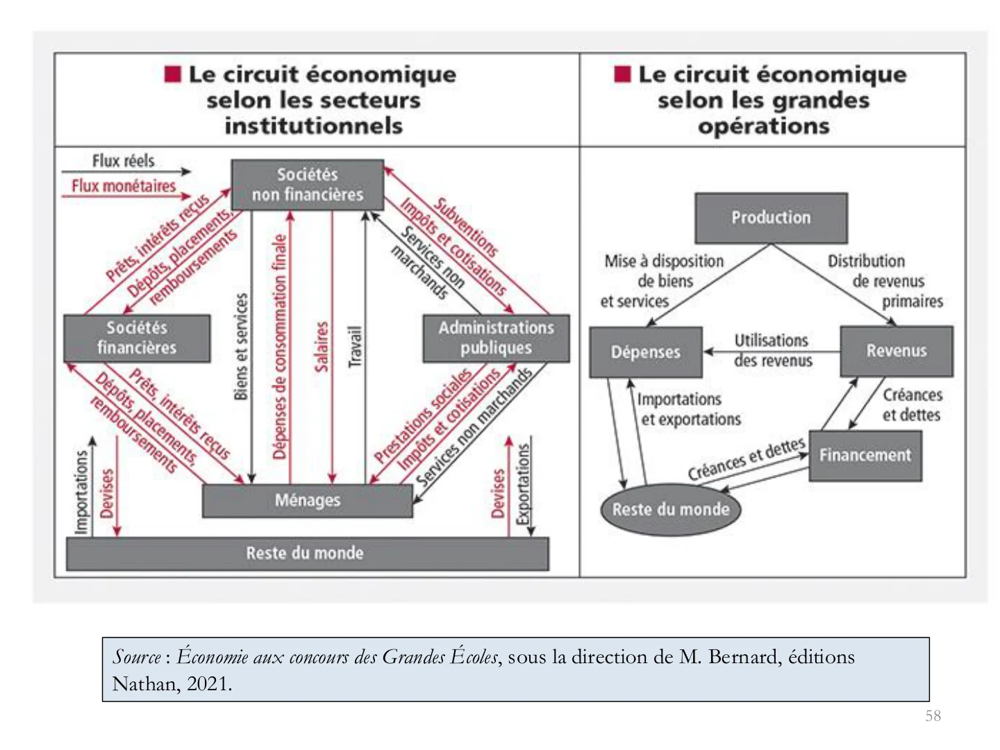

ESH · Cours de la professeure · Chapitre 1
Les acteurs et les grandes fonctions de l’économie
Partie 1 · Des acteurs économiques aux premières notions de production et de rendements.
Sommaire de la partie 1
Introduction · Représenter l’économie
Support : diapositives 2 à 4.
Produire, recevoir un salaire, acheter, épargner ou emprunter : une économie repose sur une multitude de décisions. La comptabilité nationale (CN) permet de les organiser dans un cadre commun, de mesurer les opérations et de comprendre les liens entre les acteurs.
La comptabilité nationale est une représentation globale, détaillée et chiffrée de l’activité économique, construite dans un cadre comptable cohérent. Elle décrit les relations entre les agents d’une économie pendant une période donnée.
Le mot représentation est essentiel : les comptes reposent sur des conventions de classement et de mesure. Ils ne sont pas une photographie exhaustive et spontanée du réel. Une activité peut être utile sans entrer dans la production mesurée ; le travail domestique réalisé pour soi-même en est un exemple courant.
Le chapitre relie cinq grandes fonctions : production, répartition des revenus, consommation, épargne et investissement. Une même unité peut remplir plusieurs fonctions, même si son classement dépend de sa fonction principale.
Une entreprise produit et verse des revenus. Les ménages utilisent leurs revenus pour consommer ou épargner. Les administrations prélèvent et redistribuent des ressources, les sociétés financières organisent des financements, et des opérations relient les résidents au reste du monde.
I.1 · Les entreprises : produire
Support : diapositives 5 à 20.
Entreprise, activité et profit
Une entreprise organise une activité productive : elle associe du travail et du capital pour proposer des biens ou des services. Sa fonction principale est la production marchande. Produire pour vendre ne signifie pas nécessairement chercher à maximiser le profit : le support cite les coopératives, les mutuelles, les entreprises d’insertion et certaines entreprises publiques.
Le produit peut servir à la consommation finale, être utilisé comme consommation intermédiaire par un autre producteur, ou devenir un bien durable de production. Un service peut lui aussi être destiné à une entreprise ou à un particulier.
La page 5 insiste sur l’autonomie juridique. Pour l’analyse économique présentée page 10, une entreprise peut aussi correspondre à un ensemble d’unités légales organisées en groupe. Il faut distinguer l’unité juridique et l’organisation économique de la production.
Les entreprises se différencient par leur statut juridique, leur secteur d’activité, leur organisation et leur taille. Alfred Chandler est cité pour ses travaux sur l’organisation des entreprises. Trois indicateurs servent à apprécier leur taille : l’effectif, le chiffre d’affaires et le total de bilan.
Le chiffre d’affaires mesure les ventes réalisées pendant une période. La valeur ajoutée mesure la richesse créée par la production après retrait des consommations intermédiaires. Le total de bilan est une grandeur de stock à une date : le total de l’actif est égal au total du passif, qui décrit les financements de cet actif.
Microentreprises, PME, ETI et grandes entreprises
| Catégorie | Effectif | Critère financier et condition |
|---|---|---|
| Microentreprise (MIC) | Moins de 10 personnes | Chiffre d’affaires ≤ 2 M€ ou bilan ≤ 2 M€. Les MIC font partie des PME. |
| PME | Moins de 250 personnes | Chiffre d’affaires ≤ 50 M€ ou bilan ≤ 43 M€. Les « PME hors MIC » excluent les microentreprises. |
| ETI | Moins de 5 000 personnes | Ne pas appartenir aux PME ; chiffre d’affaires ≤ 1 500 M€ ou bilan ≤ 2 000 M€. |
| Grande entreprise (GE) | Entreprise qui n’entre dans aucune catégorie précédente : au moins 5 000 salariés, ou chiffre d’affaires > 1,5 Md€ et bilan > 2 Md€. | |
Définitions : Insee, microentreprise, ETI et grande entreprise. Le régime fiscal du micro-entrepreneur est une autre notion.
Le seuil d’effectif doit être combiné au critère financier. À 5 000 salariés exactement, on est déjà une grande entreprise. Une entreprise de moins de 250 salariés peut être une ETI si elle dépasse à la fois les plafonds financiers des PME, tout en restant dans ceux des ETI. La phrase de la page 9 doit donc être précisée.
Un tissu productif très concentré
Dans le champ marchand non agricole et non financier étudié, le support indique pour 2023 environ 5,2 millions d’entreprises, 15,9 millions de salariés en équivalent temps plein et 1 473 milliards d’euros de valeur ajoutée. Les 333 GE et les 7 442 ETI génèrent ensemble 58 % de cette valeur ajoutée ; les microentreprises en génèrent 19 % et les PME hors MIC 23 %.
Ce qu’il faut expliquer : être majoritaire en nombre d’entreprises ne signifie pas produire la majorité de la valeur ajoutée. Les GE et les ETI ont individuellement une activité et des effectifs beaucoup plus importants. Les parts d’emploi du support sont respectivement de 28 % pour les GE, 26 % pour les ETI, 29 % pour les PME hors MIC et 17 % pour les MIC.
La page 13 ajoute une dimension dynamique : la destruction créatrice, associée à Joseph Schumpeter, désigne le renouvellement de l’économie par l’innovation, avec essor de nouvelles activités et recul d’activités anciennes. Toute fermeture d’entreprise ne suffit pas, à elle seule, à démontrer ce mécanisme. La mondialisation et les technologies de l’information contribuent également à fragmenter les chaînes de valeur mondiales (CVM) : les étapes de production peuvent être réparties entre plusieurs pays.
Voir les documents 14 à 17 : nombre d’entreprises, répartition de l’emploi et de la valeur ajoutée, puis répartition sectorielle. Les dates et le champ de chaque graphique doivent accompagner le chiffre cité.
Capital fixe, capital circulant et FBCF
| Notion | Idée | Exemple |
|---|---|---|
| Capital fixe | Moyens de production utilisés de manière durable et répétée | Four d’une boulangerie, machine, bâtiment, logiciel de production |
| Capital circulant | Éléments consommés ou transformés pendant la production | Farine, énergie, emballages |
| FBCF | Flux d’acquisitions moins cessions d’actifs fixes par les producteurs résidents | Acquisition d’un four utilisé plusieurs années |
La formation brute de capital fixe est la mesure comptable de l’investissement en actifs fixes. Ces actifs, matériels ou immatériels, sont produits et utilisés pendant au moins un an. « Brute » signifie que l’on ne retire pas la consommation de capital fixe, c’est-à-dire l’usure et l’obsolescence estimées.
La FBCF n’est pas limitée aux biens matériels neufs : sa définition retient les acquisitions moins les cessions d’actifs fixes. Acheter des actions est une opération financière, pas une FBCF. Définition Insee de la FBCF.
Le cours retient la convention pédagogique du seuil de 50 % des coûts pour distinguer production marchande et non marchande : une production marchande est vendue à un prix économiquement significatif. Ce seuil sert de repère ; le classement comptable complet tient aussi compte de la nature et du comportement du producteur.
I.2 · Les ménages : consommer et épargner
Support : diapositives 21 à 38.
Le ménage n’est pas nécessairement une famille
Au sens du recensement utilisé dans les graphiques, un ménage réunit les occupants d’une résidence principale, avec ou sans liens de parenté. Une personne seule constitue donc un ménage ; des colocataires peuvent appartenir au même ménage.
Le support indique 30,9 millions de ménages en 2023, en France hors Mayotte, et une taille moyenne de 2,14 personnes, contre 3,1 en 1968. Vieillissement, séparations, hausse de la vie en solo et recul des familles nombreuses participent à cette évolution. Les pages 22–23 permettent d’en observer les transformations.
En comptabilité nationale, les ménages consomment, mais ils fournissent aussi du travail, détiennent du capital et peuvent produire comme entrepreneurs individuels. Ces derniers sont généralement intégrés au secteur des ménages, et non aux sociétés non financières.
Revenu disponible et pouvoir d’achat
Les revenus primaires proviennent de la participation à la production et de la propriété : salaires, revenus mixtes des indépendants, revenus du patrimoine. La redistribution ajoute des transferts reçus et retranche notamment des cotisations et des impôts.
Revenu disponible = revenus primaires + prestations sociales en espèces − cotisations sociales − impôts directs
On ajoute ou retranche, selon le cadre de l’exercice, les autres transferts courants nets. La CSG est comprise dans les prélèvements : ne pas la compter deux fois si elle est déjà incluse dans les impôts fournis.
« Prestations − prélèvements » ne suffit pas : cela omet les revenus primaires. Dans un exercice, il faut aussi savoir si le salaire donné est brut ou net pour éviter de soustraire deux fois les cotisations.
Le revenu nominal est exprimé en euros courants ; le pouvoir d’achat indique ce qu’il permet d’acheter compte tenu des prix. À prix inchangés, plus de revenu permet de consommer davantage. Si les prix augmentent plus vite que le revenu, le pouvoir d’achat diminue.
Un revenu qui augmente de 2 % lorsque les prix augmentent de 3 % correspond à un pouvoir d’achat en baisse. La variation exacte est obtenue avec le rapport des coefficients multiplicateurs : 1,02 / 1,03 − 1. Soustraire 3 % à 2 % donne seulement une approximation de −1 %.
Il faut distinguer le pouvoir d’achat global, par personne, par ménage et par unité de consommation (UC). Les UC tiennent compte de la composition des ménages et des économies réalisées par la vie en commun. Le support donne pour 2025 −0,4 % au total et −0,7 % par UC. Tableau Insee des comptes annuels 2025.
Dépense de consommation et consommation effective
| Notion | Ce qu’elle mesure | Exemple |
|---|---|---|
| Dépense de consommation finale | Biens et services dont la dépense est supportée par les ménages pour satisfaire leurs besoins | Alimentation, vêtements, abonnement |
| Consommation finale effective | Dépense des ménages + transferts sociaux en nature reçus des APU et des ISBLSM | Consommation personnelle et services individualisables de santé ou d’éducation financés par la collectivité |
La consommation effective permet donc de mieux décrire les biens et services dont les ménages bénéficient réellement. Il faut associer à cette notion le revenu disponible ajusté, qui ajoute au revenu disponible les transferts sociaux en nature.
Les dépenses pré-engagées sont liées à des contrats difficiles à renégocier à court terme : logement, assurances, télécommunications. Elles réduisent les possibilités d’arbitrage immédiat. Le graphique page 34 donne 30,3 % du RDB en 2024, dont 22,8 % pour les dépenses liées au logement. Ce ratio est rapporté au revenu, alors que les parts de la page 33 sont rapportées aux dépenses de consommation.
Épargne, patrimoine et ratios
RDB = consommation finale + épargne brute
Épargne brute = RDB − consommation finale
L’épargne est un flux, mesuré sur une période. Le patrimoine est un stock d’actifs à une date ; le patrimoine net retranche les dettes. Épargner peut accroître le patrimoine, mais sa valeur évolue aussi avec les prix des actifs et d’autres opérations, par exemple un héritage.
| Ratio | Calcul en % | Ce qu’il faut lire |
|---|---|---|
| Taux d’épargne | Épargne brute / RDB × 100 | Part du revenu non consommée |
| Taux d’épargne financière | Capacité de financement / RDB × 100 | Solde disponible pour les opérations financières, après les opérations du compte de capital |
| Taux d’investissement en logement | FBCF des ménages hors entrepreneurs individuels / RDB × 100 | Part du revenu affectée à cet investissement |
| Taux d’investissement national | FBCF / PIB × 100 | Part du PIB correspondant à la FBCF |
Pour les entreprises, on rencontre aussi FBCF / valeur ajoutée. Le dénominateur dépend donc de l’agent et de la question. Les taux d’épargne et d’épargne financière ne s’additionnent pas : le second n’est pas un supplément au premier.
Le numérateur du taux d’épargne est le montant d’épargne, et non le « taux d’épargne ». Le partage 85 % consommés / 15 % épargnés est un ordre de grandeur illustratif. Le taux annuel 2025 du support est de 17,9 %, soit 82,1 % consommés dans cette identité. Le tableau Insee distingue les années et les révisions.
I.3 · Les administrations publiques
Support : diapositives 39 à 48.
Les administrations publiques (APU) produisent principalement des services non marchands et redistribuent les revenus. Elles comprennent les administrations centrales (État et organismes divers d’administration centrale), les administrations locales et les administrations de sécurité sociale. Chaque ensemble dispose de recettes et de dépenses propres.
Il ne faut pas réduire les APU au seul gouvernement ni assimiler automatiquement une entreprise détenue par l’État à une administration. Son classement dépend notamment de son activité et de son caractère marchand.
Des fonctions régaliennes à l’État-providence
Le support présente l’élargissement du rôle de l’État : aux fonctions régaliennes, comme la défense, la justice et la sécurité, se sont ajoutées des interventions dans la santé, l’éducation, la protection sociale et la régulation économique. La crise de 1929, l’essor des idées keynésiennes et le développement de la protection sociale jouent un rôle dans cette évolution. Il s’agit d’une tendance historique : l’État ne s’est jamais limité uniformément et partout aux mêmes fonctions.
| Fonction | Objectif | Exemple pédagogique |
|---|---|---|
| Allocation | Améliorer l’affectation des ressources | Financer des infrastructures, fournir un bien collectif, agir sur une externalité |
| Redistribution | Modifier la répartition des revenus et réduire certaines inégalités | Prélèvements et prestations sociales |
| Stabilisation | Agir sur les fluctuations de l’activité, de l’emploi et des prix | Soutenir l’activité en période de récession |
Une même mesure peut remplir plusieurs fonctions. Une dépense d’éducation finance un service, peut réduire des inégalités et soutenir l’activité. Pour classer une mesure, il faut justifier l’objectif mis en avant.
Recettes, dépenses, déficit et dette
Les prélèvements obligatoires comprennent les impôts et les cotisations sociales. Ils financent une partie des dépenses et peuvent orienter les comportements. Les administrations disposent également d’un pouvoir réglementaire : une norme peut modifier l’activité sans prendre la forme d’une dépense budgétaire.
Le déficit public est un flux : les dépenses excèdent les recettes sur une période. La dette publique est un stock d’engagements à une date. Les déficits contribuent à l’accroissement de la dette, mais la variation exacte de celle-ci dépend aussi d’autres opérations.
Les pages 43–47 donnent pour 2025 : dépenses publiques à 57,3 % du PIB, recettes à 52,2 %, prélèvements obligatoires à 43,6 %, déficit à 5,1 % et dette brute au sens de Maastricht à 115,7 %. Il faut distinguer recettes publiques et prélèvements obligatoires : toutes les recettes ne sont pas des prélèvements obligatoires.
52,2 − 57,3 = −5,1 : le solde représente un besoin de financement de 5,1 % du PIB. Ce calcul n’est pas le niveau de la dette. Les pages 44–46 décomposent l’évolution et les administrations concernées. Comptes annuels Insee des dépenses et recettes des APU.
La triple crise de l’État-providence
Pierre Rosanvallon distingue trois dimensions de la remise en cause de l’État-providence. La crise de financement concerne la difficulté à financer les dépenses, notamment lorsque l’activité ralentit et que le chômage augmente. La crise d’efficacité porte sur les résultats obtenus : les mécanismes de protection réduisent-ils suffisamment la pauvreté et les inégalités ? La crise de légitimité concerne l’adhésion collective aux mécanismes de solidarité, leur justification et leur rapport aux citoyens.
Le support souligne, pour cette dernière dimension, une extension de la protection sociale à distance des processus démocratiques. En révision, il faut distinguer clairement les moyens financiers, les résultats et l’acceptation collective.
I.4–5 · Sociétés financières et reste du monde
Support : diapositives 49 à 52.
Les sociétés financières
Leur activité principale est de financer, d’assurer ou de gérer des moyens de financement. Elles mettent notamment en relation des agents qui disposent de ressources et des agents qui ont besoin de financer leurs dépenses.
Les banques ont une particularité : elles créent de la monnaie scripturale lorsqu’elles accordent un crédit. Il ne faut donc pas les présenter uniquement comme des intermédiaires prêtant une épargne déjà déposée. Les assureurs et d’autres organismes financiers exercent d’autres fonctions de financement, de gestion de risques ou de placement.
Le support évoque le développement de l’intermédiation de marché et l’internationalisation des activités bancaires. Le financement par titres ne signifie pas la disparition des intermédiaires : banques et fonds peuvent participer aux émissions, à l’achat ou à la gestion de ces titres.
Certains services financiers sont rémunérés par des commissions explicites ; d’autres par des marges d’intérêt. Leur mesure ne se réduit donc pas à compter des biens vendus. Le chapitre Monnaie et financement développe ces mécanismes.
Le reste du monde : une question de résidence
Le reste du monde regroupe les unités non résidentes pour les relations qu’elles entretiennent avec les résidents. La résidence économique, et non la nationalité, détermine ce classement. Une entreprise à capitaux étrangers peut être résidente en France.
| Opération ou document | Définition |
|---|---|
| Exportation | Bien ou service fourni par un résident à un non-résident |
| Importation | Bien ou service fourni par un non-résident à un résident |
| Balance commerciale | Échanges de biens ; solde égal aux exportations de biens moins les importations de biens |
| Balance des paiements | Ensemble organisé des transactions entre résidents et non-résidents : biens, services, revenus, transferts et opérations financières |
Un touriste non résident paie une chambre à un hôtel résident en France : l’hôtel fournit un service à un non-résident. C’est une exportation de service, même si l’hôtel et le touriste se trouvent physiquement en France lors de la prestation.
Pour comparer les taux d’ouverture, préciser la convention : on utilise souvent (X + M) / (2 × PIB) × 100, la moyenne des exportations et importations rapportée au PIB. Le ratio (X + M) / PIB donne un résultat deux fois plus élevé. Ne pas comparer les deux sans le signaler. L’ouverture concerne aussi les capitaux et les relations de financement.
I.6 · Circuit et comptabilité nationale
Support : diapositives 53 à 62.
Des unités aux secteurs institutionnels
Le support rappelle la création de l’Insee en 1946, les besoins de reconstruction et de politique économique après-guerre, puis l’harmonisation progressive des systèmes comptables, notamment avec le système élargi de comptabilité nationale en France en 1976. L’Insee, la Banque de France et les administrations économiques contribuent à la connaissance chiffrée de l’économie.
La CN sert à établir un diagnostic, éclairer les décisions publiques et comparer des économies. Les comparaisons exigent des conventions suffisamment communes. Les comptes actuels ont continué à évoluer après le SEC95 cité dans le support.
Une unité institutionnelle est une unité économique capable de prendre des décisions et de réaliser des opérations. Un secteur institutionnel regroupe des unités résidentes ayant des fonctions et des comportements économiques similaires. Un secteur n’est donc pas un seul centre de décision autonome.
| Ensemble | Fonction principale / rôle | Ressources caractéristiques |
|---|---|---|
| Sociétés non financières (SNF) | Production marchande non financière | Ventes de biens et services |
| Sociétés financières (SF) | Services financiers, financement, assurance | Commissions, marges, primes selon l’activité |
| Administrations publiques (APU) | Production non marchande et redistribution | Prélèvements obligatoires et autres recettes |
| Ménages | Consommation ; production des entrepreneurs individuels | Revenus d’activité, du patrimoine et transferts |
| ISBLSM | Production non marchande au service des ménages | Cotisations, dons, subventions notamment |
| Reste du monde | Contrepartie des opérations entre résidents et non-résidents | À examiner selon les opérations enregistrées |
ISBLSM signifie « institutions sans but lucratif au service des ménages ». Ce secteur complète le classement des acteurs présenté dans le support. Toutes les associations n’y appartiennent pas automatiquement : leur activité et leur contrôle comptent. Présentation Insee des secteurs institutionnels.
Flux réels, flux monétaires, emplois et ressources
Les flux réels portent sur des biens, des services ou du travail. Les flux monétaires sont des paiements ou transferts d’argent. Pour une unité, une ressource décrit l’origine d’une valeur disponible ; un emploi, son utilisation. Dans les tableaux du cours, les emplois sont à gauche et les ressources à droite.

Une société verse 100 € de salaire : c’est un emploi pour la société et une ressource pour le ménage. Le travail fourni constitue le flux réel correspondant. Un prélèvement ou une prestation peut en revanche être un transfert sans contrepartie directe sous forme de bien ou de service.
Le cours présente la logique de la partie double. Dans un enregistrement comptable complet, les opérations ont aussi des contreparties financières ; entre deux unités, la cohérence du système implique une logique de partie quadruple. Le schéma pédagogique emplois/ressources sert d’abord à repérer qui verse et qui reçoit.
L’enchaînement des comptes et de leurs soldes
| Compte | Question | Solde |
|---|---|---|
| Production | Quelle richesse la production crée-t-elle après les consommations intermédiaires ? | Valeur ajoutée |
| Exploitation | Que reste-t-il après rémunération des salariés et impôts sur la production nets de subventions ? | Excédent brut d’exploitation (EBE) ou revenu mixte |
| Affectation des revenus primaires | Quels revenus primaires sont reçus ou versés, notamment les revenus de la propriété ? | Solde des revenus primaires |
| Distribution secondaire du revenu | Comment les transferts courants modifient-ils ces revenus ? | Revenu disponible brut |
| Utilisation du revenu disponible | Quelle part du revenu n’est pas consommée ? | Épargne brute |
| Capital | L’épargne et les transferts en capital financent-ils les acquisitions nettes d’actifs non financiers ? | Capacité (+) ou besoin (−) de financement |
| Financier | Comment évoluent les actifs financiers et les passifs par les transactions ? | Capacité ou besoin de financement calculé par les opérations financières |
Dans le schéma simplifié, le solde d’un compte est repris dans le compte suivant. Par exemple, le RDB est calculé à l’issue de la distribution secondaire, puis utilisé pour déterminer consommation et épargne.
VA = production − consommations intermédiaires
EBE = VA − rémunération des salariés − impôts sur la production + subventions d’exploitation
Épargne brute = RDB − dépense de consommation finale
La rémunération des salariés comprend les cotisations sociales à la charge des employeurs. Pour les entrepreneurs individuels, le revenu mixte rémunère de façon indissociable leur travail et leur capital.
Inscrire le solde équilibre les deux colonnes ; cela ne signifie pas que l’agent n’a ni déficit ni besoin de financement. Le compte financier ne doit pas être retenu comme ayant automatiquement un « solde nul ». Il décrit la contrepartie financière de la capacité ou du besoin de financement, avec des écarts statistiques possibles entre mesures.
L’EBE n’est pas le bénéfice net : les intérêts, l’usure du capital et d’autres opérations doivent encore être pris en compte. Dire qu’il retranche « toutes les dépenses » serait donc trop large.
Trois tableaux de synthèse : le TES (tableau entrées-sorties) décrit les produits et les interdépendances productives entre branches ; le TEE (tableau économique d’ensemble) organise les comptes et les opérations des secteurs ; le TOF (tableau des opérations financières) décrit les flux financiers.
II.1.1 · La production et ses facteurs
Support : diapositives 63 à 70. Début de la section II.
Travail, capital et combinaison productive
Les facteurs de production sont les moyens associés pour produire. L’analyse distingue généralement le travail, noté L, et le capital, noté K. Certaines approches isolent aussi les ressources naturelles ou d’autres éléments ; le support mentionne le progrès technique et l’information.
Le travail est une activité humaine contribuant à la production de biens et de services. Il peut se mesurer par un nombre de personnes en emploi ou un volume d’heures travaillées. Le nombre d’heures permet notamment de prendre en compte le temps partiel.
Le travail ne se limite pas à l’emploi rémunéré : le travail domestique ou bénévole existe aussi. La population active comprend les personnes en emploi et les chômeurs ; elle ne mesure donc pas directement la quantité de travail effectivement utilisée dans la production.
| Activités | Travail libre | Travail salarié |
|---|---|---|
| Non marchandes | Travail domestique, travail militant | Salariés des administrations et des ménages |
| Marchandes | Travail indépendant | Salariés des entreprises |
Le tableau original ajoute une colonne sur le travail forcé : esclavage, corvées, peines de travail obligatoire. Il croise ainsi la nature de l’activité et le mode de mise au travail. Le capital technique comprend les moyens matériels utilisés pour produire ; la distinction entre capital fixe et circulant, évoquée à la suite d’Adam Smith, reste celle étudiée plus haut.
La combinaison productive désigne les proportions de capital et de travail associées pour obtenir un volume de production. Le choix dépend des possibilités techniques, de la productivité des facteurs et de leurs coûts relatifs.
Des facteurs sont substituables lorsque l’on peut, dans certaines limites, remplacer du travail par du capital ou l’inverse pour obtenir une même production. Ils sont complémentaires lorsque leur utilisation exige des proportions déterminées. Exemple simplifié : un poste de conduite nécessite un véhicule et un conducteur ; multiplier les véhicules sans conducteur supplémentaire ne multiplie pas les trajets.
Fonction de production et intensité capitalistique
Y = f(K, L)
Elle donne la quantité maximale de production Y accessible avec les quantités de facteurs K et L, pour une technologie donnée. Les facteurs sont les inputs et la production est l’output. La forme générale du support est Y = f(X₁, X₂, …, Xⱼ).
L’intensité capitalistique est le ratio K / L : la quantité de capital par unité de travail. Une technique plus capitalistique mobilise relativement davantage de capital par travailleur ou par heure. Ce n’est pas nécessairement un pourcentage : son unité dépend de la mesure de K et de L.
Un atelier utilise 12 machines pour 6 travailleurs : K/L = 2 machines par travailleur. Avec 12 machines et 12 travailleurs, K/L = 1. Le capital est resté fixe, mais l’intensité capitalistique a diminué.
Dans le modèle usuel, c’est un facteur comme K qui est fixe à court terme. K/L n’est pas automatiquement fixe : il varie si L varie. À long terme, tous les facteurs peuvent être ajustés.
Productivité et rendements factoriels
La productivité moyenne du travail est Y/L. La productivité marginale du travail mesure la production supplémentaire obtenue en augmentant légèrement L, avec K et la technique maintenus constants. Dans un tableau où l’effectif augmente d’une unité à chaque ligne, elle se lit comme le supplément de production entre deux lignes.
| Travailleurs L | Production Y | Supplément pour un travailleur de plus |
|---|---|---|
| 1 | 10 | — |
| 2 | 18 | +8 |
| 3 | 24 | +6 |
| 4 | 28 | +4 |
La production totale augmente, mais les gains supplémentaires diminuent : on a des rendements factoriels décroissants sur les variations observées. Le facteur fixe devient un frein : ajouter du personnel autour d’un même équipement apporte de moins en moins de production. « Productivité marginale décroissante » ne signifie donc pas « production totale décroissante ».
Rendements factoriels ou rendements d’échelle ?
| Question | Facteurs que l’on fait varier | Comparaison |
|---|---|---|
| Rendements factoriels | Un facteur varie, les autres sont fixes | Comment évolue la production supplémentaire apportée par le facteur variable ? |
| Rendements d’échelle | Tous les facteurs sont multipliés dans la même proportion | La production augmente-t-elle moins vite, aussi vite ou plus vite que les facteurs ? |
Si l’on double K et L, les rendements d’échelle sont constants si Y double, croissants si Y fait plus que doubler et décroissants si Y fait moins que doubler. En notation, pour un multiplicateur t > 1, on compare f(tK, tL) à t × f(K, L).
Dire « j’ajoute un travailleur en gardant les mêmes machines » concerne un rendement factoriel. Dire « je double les travailleurs et les machines » concerne un rendement d’échelle. Une technologie peut avoir des rendements factoriels décroissants et des rendements d’échelle constants : il n’y a aucune contradiction.
La décroissance de la productivité marginale est une hypothèse usuelle, à technique donnée, souvent valable à partir d’un certain niveau d’utilisation. Les rendements d’échelle peuvent être étudiés aussi pour des facteurs complémentaires : la substituabilité n’est pas une condition indispensable pour les définir.
Lire les graphiques et tableaux du support
Les documents sont conservés dans leur mise en page d’origine. Pour chaque lecture : identifier le titre, la date, le champ, l’unité et le dénominateur, puis formuler une comparaison. Une variation en pourcentage n’est pas une variation en points de pourcentage.
- Page 10 · Catégories d’entreprises. Croiser effectifs et seuils financiers. Le graphique complète les définitions des pages 8–9 et montre pourquoi un seul critère ne suffit pas.
- Pages 14–15 · Nombre et poids des entreprises en 2023. Comparer les parts en nombre, en emploi et en valeur ajoutée. La concentration économique se voit dans l’écart entre ces indicateurs.
- Pages 16–17 · Secteurs d’activité. Les parts de valeur ajoutée et les parts du nombre d’entreprises ne décrivent pas la même chose. La page 16 porte sur 2023 ; la page 17 sur 2022.
- Pages 22–23 · Taille et structure des ménages. Relier la diminution de la taille moyenne aux évolutions des modes de vie, sans confondre nombre de ménages et nombre de personnes.
- Page 26 · Composition du revenu disponible. Repérer les revenus ajoutés et les prélèvements retranchés. Le graphique compare plusieurs configurations de ménage.
- Pages 27–28 · Revenu et pouvoir d’achat. Distinguer valeur et volume, variations trimestrielles et annuelles. La page 28 contient des prévisions : elles ne doivent pas être présentées comme des résultats déjà constatés.
- Page 33 · Budget de consommation en 2025. Le logement, chauffage et éclairage représente 28,0 % des dépenses, le transport 12,6 % et l’alimentation hors alcool 12,5 %. Ces parts sont celles du document et non des parts du RDB.
- Pages 34–35 · Dépenses pré-engagées et consommation. La page 34 rapporte les dépenses au RDB. La page 35 compare des taux de variation : une courbe qui descend peut indiquer un ralentissement et non une baisse du niveau.
- Page 38 · Épargne et épargne financière. Le second ratio ne se rajoute pas au premier. Vérifier le millésime du graphique, qui ne correspond pas nécessairement à celui de toutes les phrases voisines.
- Pages 44–46 · Finances publiques. La page 44 utilise deux axes : bien lire celui de chaque série. La page 45 exprime des ratios en % du PIB ; la page 46 des soldes en milliards d’euros.
- Page 58 · Circuit économique. Suivre une flèche, identifier les deux acteurs et nommer l’opération. Le second schéma raisonne par fonctions économiques.
- Pages 61 et 64 · Tableaux de notions. Associer chaque compte à son solde ; puis distinguer les formes de travail dans la typologie de Freyssinet.
Auteurs et références du support
| Auteur | Pages | Association à retenir |
|---|---|---|
| Alfred Chandler | 7 | Organisation et structures des entreprises |
| Joseph A. Schumpeter | 13 | Destruction créatrice et renouvellement de l’économie par l’innovation |
| John M. Keynes | 40 | Élargissement du rôle économique de l’État ; action sur l’activité |
| Richard Musgrave | 41 | 1959 : allocation, redistribution, stabilisation |
| Pierre Rosanvallon | 47–48 | Crises de financement, d’efficacité et de légitimité de l’État-providence |
| Jacques Freyssinet | 64 | Typologie des formes de travail et des modes de mise au travail |
| Adam Smith | 65 | Distinction traditionnelle entre capital fixe et capital circulant |
Pour utiliser un auteur, expliquer le mécanisme auquel il est associé. Une succession de noms sans lien avec le raisonnement ne remplace pas une démonstration.
Précisions pour réviser sans ambiguïté
Le PDF et ses diapositives sont archivés tels que reçus. Le cours expliqué signale les formulations à préciser. Les principaux points à revoir sont regroupés ici.
| Page | Point à retenir |
|---|---|
| 8–10 | Respecter les seuils exacts et les opérateurs « et / ou » des catégories d’entreprises ; les MIC font partie des PME. |
| 19–20 | La FBCF est un flux d’acquisitions moins cessions d’actifs fixes, pas le stock de capital ni seulement l’achat de biens matériels neufs. |
| 25 | Le revenu disponible inclut les revenus primaires. La CSG ne doit pas être soustraite deux fois. |
| 29 et 37 | Le partage 85/15 est un repère illustratif. Le taux d’épargne est épargne/RDB, et non taux d’épargne/RDB. |
| 31 | La phrase sur un ralentissement des prix est incompatible avec « +0,8 % après +0,2 % ». Le tableau annuel Insee donne +2,2 % pour 2024 : vérifier le millésime avant de citer la phrase. |
| 37–38 | Le taux d’épargne financière et le taux d’épargne sont différents ; les années doivent rester attachées à chaque chiffre. Le repère 9,0 % est donné pour 2025 dans le tableau de bord Insee, tandis que la phrase p. 37 l’associe à 2024. |
| 43 | Le chiffre historique « 30 % du PIB en 1980 » n’est pas retenu dans la fiche de révision faute de source précise dans le support. Ne pas le confondre avec les ratios documentés pour 2025. |
| 47 | Le solde au sens de Maastricht concerne l’ensemble des APU ; l’expression « déficit public » est plus précise que « déficit budgétaire » de l’État. |
| 55–56 | Une unité décide ; un secteur regroupe des unités. L’équilibre des colonnes d’un compte n’efface pas son solde économique. |
| 61 | Le compte financier n’a pas systématiquement un solde nul. L’EBE n’est pas le bénéfice net. |
| 64 et 68 | La population active inclut les chômeurs. Un capital fixe à court terme ne signifie pas un ratio K/L fixe. |
| 69–70 | Un facteur variable : rendements factoriels. Tous les facteurs dans la même proportion : rendements d’échelle. La décroissance d’un gain marginal n’implique pas celle de la production totale. |
Les données d’années différentes sont conservées avec leur millésime. Les repères du support ne constituent pas une actualisation automatique de toutes les séries statistiques.
La fiche de révision
- Classer : cinq secteurs résidents + le reste du monde ; fonction principale ≠ seule fonction.
- Produire : associer K et L ; distinguer capital fixe, consommations intermédiaires et investissement.
- Mesurer : VA = production − CI ; ne pas confondre CA, VA et bénéfice.
- Redistribuer : revenus primaires + transferts reçus − prélèvements → revenu disponible.
- Utiliser le revenu : RDB = consommation + épargne.
- Calculer un taux : nommer le numérateur, le dénominateur et l’année.
- Expliquer l’État : Musgrave = allocation, redistribution, stabilisation ; Rosanvallon = financement, efficacité, légitimité.
- Lire les comptes : production → VA ; exploitation → EBE ; distribution secondaire → RDB ; utilisation → épargne ; capital → capacité/besoin de financement.
- Distinguer les grandeurs : épargne et déficit sont des flux ; patrimoine et dette sont des stocks.
- Comprendre les rendements : un facteur varie ou tous les facteurs varient dans la même proportion ?
Support et références
Support principal : Audrey Demolliens, Les acteurs et les grandes fonctions de l’économie, chapitre 1, ESH, prépa ECG 1re année, 2026/2027. Fichier reçu : ESH part1.pdf, 70 diapositives. Archivage le 12 septembre 2026 ; date de séance non indiquée.
Le texte de cette page est une reformulation pédagogique, complétée par des exemples. La mise en page et le contenu intégral du support sont accessibles dans le diaporama original et le PDF original.
- Insee : grande entreprise, entreprise de taille intermédiaire, microentreprise, FBCF.
- Insee, comptes annuels 2025 : revenu, pouvoir d’achat et épargne des ménages ; taux d’épargne des ménages.
- Insee : secteurs institutionnels, dépenses et recettes publiques, comptes financiers et explication de leurs soldes.